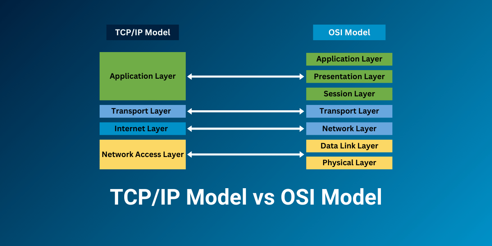

Az OSI modell (Open Systems Interconnection) egy hét rétegből álló elméleti keret, amely az adatátvitelt szabványosítja a számítógépes hálózatokban. Minden rétegnek megvan a saját feladata, például a fizikai réteg az adatok továbbítását végzi, míg az alkalmazási réteg a felhasználói programokhoz kapcsolódik. A rétegek egymásra épülnek, így a kommunikáció átláthatóbb és hibakeresés szempontjából is könnyebben kezelhető. Fontos szerepe van az oktatásban és a gyakorlatban is, mivel segít megérteni a hálózati eszközök és protokollok működését. Bár napjainkban sok esetben az egyszerűbb TCP/IP modell az elterjedtebb, az OSI modell továbbra is alapfogalom a hálózati rendszerek tanulmányozásában.
